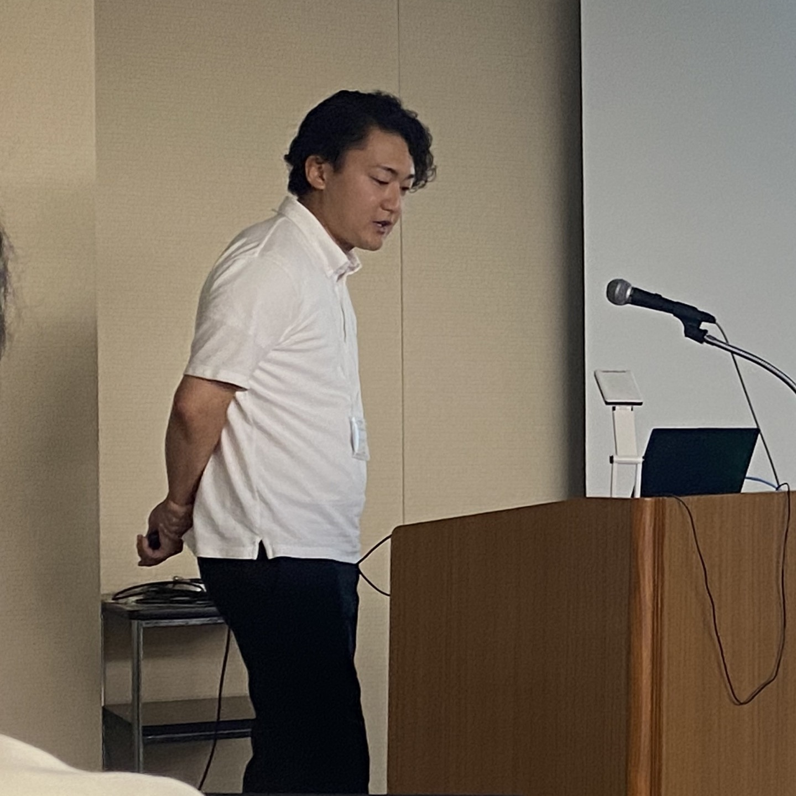

「これまでの経験と今の自分につながりを感じることは、青年の自己形成とどう関連するのか」「将来の自分を思い描くことは、目の前の課題へのモチベーションにどう関わるのか」。こうした問いを、教育心理学の立場から研究しています。
具体的には、過去・現在・未来の自分のつながりの感覚である「自己連続性」や、未来の出来事を具体的に想像する「未来思考」に着目し、青年期のアイデンティティ発達とモチベーションの仕組みを探っています。特に、経験や変化を一つの物語として理解することと、自分の中に変わらない部分を見いだすことの違いに注目しています。また、将来の目標を達成した場面を思い描くことが、今の学習意欲にどう関わるかを調べています。
さらに、対話型AIに自分の経験を語ることが、大学生の自己理解やキャリア形成に及ぼす影響を検討しています。これらの研究を通じて、青年がこれまでの歩みを捉え直し、これからの生き方や学びを考える過程への理解を深め、学校や大学における振り返り活動、学習支援、キャリア教育に役立つ知見の創出を目指しています。
過去の経験と現在の自分のつながりを振り返り、青年の自己理解を支えるツールや教育プログラムの開発
将来の自分や目標達成後の場面を具体的に思い描く活動を取り入れた、学習意欲を支える教材・授業の開発
自分の経験についての語りを通じた、大学生の自己理解・キャリア形成を支援する仕組みの開発と効果検証
青年期のアイデンティティ発達やモチベーションに関する知見を活用した、教員・支援者向け研修
主に青年が自分の経験や将来像を、今の学びや進路選択に結びつけるにはどうしたらよいかという課題に取り組みます。過去の経験の振り返りと将来の具体的なイメージづくりを通じ、自己理解と学習意欲を支える教材やキャリア教育プログラムを、学校・自治体・教育関連企業と共同開発できます。また、質問紙調査の設計や量的データの統計分析を通じて、若者の意識や学習意欲の実態把握、教育プログラムの効果検証を行い、根拠に基づく支援の改善に貢献します。

アイデンティティ発達・学習モチベーション・キャリア教育プログラム開発に関するご相談を承っています。